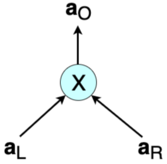
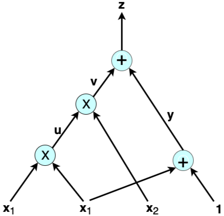

Rank-1 Constraint System with Application to Bulletproofs
- Introduction
- Arithmetic Circuits
- Rank-1 Constraint Systems
- From Arithmetic Circuits to Programmable Constraint Systems for Bulletproofs
- Interstellar's Bulletproof Constraint System
- Conclusions, Observations and Recommendations
- References
- Appendix
- Contributors
Introduction
This report explains the technical underpinnings of Rank-1 Constraint Systems (R1CSs) as applied to Bulletproofs.
The literature on the use of R1CSs in zero-knowledge (ZK) proofs, for example in zero-knowledge Succinct Non-interactive ARguments of Knowledge (zk‑SNARKs), shows that this mathematical tool is used simply as one part of many in a complex process towards achieving the proof [1]. Not much attention is given to it, not even in explaining what "rank-1" actually means. Although the terminology is similar to the traditional rank of a matrix in linear algebra, examples on the Internet do not yield a reduced matrix with only one non-zero row or column.
R1CSs became more prominent for Bulletproofs due to research work done by Cathie Yun and her colleagues at Interstellar. The constraint system, in particular R1CS, is used as an add-on to Bulletproof protocols. The title of Yun's article, "Building on Bulletproofs" [2], suggests this is true. One of the Interstellar team's goals is to use the constraint system in their Confidential Asset Protocol called the Cloak and in their envisaged Spacesuit. Despite their work on using R1CS being research in progress, their detailed notes on constraint systems and their implementation in RUST are available in [3].
The aim of this report is to:
- highlight the connection between arithmetic circuits and R1CSs;
- clarify the difference R1CSs make in Bulletproofs and in range proofs;
- compare ZK proofs for arithmetic circuits and programmable constraint systems.
Arithmetic Circuits
Overview
Many problems in Symbolic Computationdef and cryptography can be expressed as the task of computing some polynomials. Arithmetic circuits are the most standard model for studying the complexity of such computations. ZK proofs form a core building block of many cryptographic protocols. Of special interest are ZK proof systems capable of proving the correct computation of arbitrary arithmetic circuits ([6], [7]).
Definition of Arithmetic Circuit
An arithmetic circuit $\mathcal{A}$ over the fielddef $\mathcal{F}$ and the set of variables $X = \lbrace {x_1,\dots,x_n} \rbrace$ is a directed acyclic graph such that the vertices of $\mathcal{A}$ are called gates, while the edges are called wires [7]:
- A gate is of in-degree $l$ if it has $l$ incoming wires, and similarly, of out-degree $k$ if it has $k$ outgoing wires.
- Every gate in $\mathcal{A}$ of in-degree 0 is labeled with either a variable ${x_i}$ or some field element from $\mathcal{F}$. Such a gate is called an input gate. Every gate of out-degree 0 is called an output gate or the root.
- Every other gate in $\mathcal{A}$ is labeled with either $\otimes$ or $\oplus$, and called a multiplication gate or addition gate, respectively.
- An arithmetic circuit is called a formula if it is a directed tree whose edges are directed from the leaves to the root.
- The depth of a node is the number of edges in the longest directed path between the node and the root.
- The size of $\mathcal{A}$, denoted $|\mathcal{A}|$, is the number of wires, i.e. edges, in $\mathcal{A}$.
Arithmetic circuits of interest and most applicable to this report are those with gates of in-degree 2 and out-degree 1. A typical multiplication gate has a left input $a_L$, a right input $a_R$ and an output $a_O$ (shown in Figure 1). Note that $ a_L \cdot a_R - a_O = 0 $.

In cases where the inputs and outputs are all vectors of size $n$, i.e. $\mathbf{a_L} = ( a_{L, 1}, a_{L, 2}, \dots, a_{L, n})$, $\mathbf{a_R} = ( a_{R, 1}, a_{R, 2}, \dots, a_{R, n})$ and $\mathbf{a_O} = ( a_{O, 1}, a_{O, 2}, \dots, a_{O, n})$, then multiplication of $ \mathbf{a_L} $ and $ \mathbf{a_R} $ is defined as an entry-wise product called the Hadamard product:
$$ \mathbf{a_L}\circ \mathbf{a_R} = \big(( a_{L, 1} \cdot a_{R, 1} ), ( a_{L, 2} \cdot a_{R, 2} ), \dots, ( a_{L, n} \cdot a_{R, n} ) \big) = \mathbf{a_O} $$
The equation ${ \mathbf{a_L}\circ \mathbf{a_R} = \mathbf{a_O} }$ is referred to as a multiplicative constraint, but is also known as the Hadamard relation [4].
Example of Arithmetic Circuit
An arithmetic circuit computes a polynomial in a natural way, as shown in this example. Consider the following arithmetic circuit $\mathcal{A}$ with inputs $\lbrace x_1, x_2, 1 \rbrace$ over some field $\mathcal{F}$:

The output of $\mathcal{A}$ above is the polynomial $x^2_1 \cdot x_2 + x_1 + 1 $ of total degree three. A typical computational problem would involve finding the solution to, let's say, $x^2_1 \cdot x_2 + x_1 + 1 = 22$. Or, in a proof of knowledge scenario, the prover has to prove to the verifier that they have the correct solution to such an equation. Following the wires in the example shows that an arithmetic circuit actually breaks down the given computation into smaller equations corresponding to each gate:
$$ u = x_1 \cdot x_1 \text{,} \ \ v = u \cdot x_2 \text{,} \ \ y = x_1 + 1 \ \text {and} \ z = v + y $$
The variables $u, v$ and $ y $ are called auxiliary variables or low-level variables, while ${ z }$ is the output of $ \mathcal{A} $. Thus, in addition to computing polynomials naturally, an arithmetic circuit helps in reducing a computation to a low-level language involving only two variables, one operation and an output.
ZK proofs in general require that statements to be proved are expressed in their simplest terms for efficiency. A ZK proof's end-to-end journey is to create a function to write proofs about, yet such a function needs to work with specific constructs. In making ZK proofs more efficient: "these functions have to be specified as sequences of very simple terms, namely, additions and multiplications of only two terms in a particular field" [8]. This is where arithmetic circuits come in.
In verifying a ZK proof, the verifier needs to carry out a step-by-step check of the computations. When these computations are expressed in terms of arithmetic circuits, the process translates to checking whether the output $ a_O $ of each gate is correct with respect to the given inputs $ a_L $ and $ a_R $. That is, testing if $ a_L \cdot a_R - a_O = 0 $ for each multiplication gate.
Rank-1 Constraint Systems
Overview
Although a computational problem is typically expressed in terms of a high-level programming language, a ZK proof requires it to be expressed in terms of a set of quadratic constraints, which are closely related to circuits of logical gates.
Other than in Bulletproof constructions, R1CS types of constraint systems have been featured in several constructions of zk‑SNARKs. At times they were simply referred to as quadratic constraints or quadratic equations; refer to [6], [9] and [10].
Definition of Constraint System
A constraint system was originally defined by Bootle et al. in [5], who first expressed arithmetic circuit satisfiability in terms of the Hadamard relation and linear constraints:
$$ \mathbf{W_L\cdot { a_L} + W_R\cdot { a_R} + W_O\cdot { a_O } = c } $$
where $\mathbf{c}$ is a vector of constant terms used in linear constraints, and $\mathbf{W_L, W_R}$ and $\mathbf{W_O}$ are weights applied to respective input vectors and output vectors. Bunz et al. [4] incorporated a vector $\mathbf{v}$ and vector of weights $\mathbf{W_V}$ into the Bootle et al. definition: $$ \mathbf{W_L\cdot { a_L} + W_R\cdot { a_R} + W_O\cdot { a_O } = W_V\cdot { v + c} } $$
where $\mathbf{v} = {(v_1, v_2, \dots, v_m )}$ is a secret vector of openings ${v_i}$ of the Pedersen Commitments $V_i$, $ i \in (1, 2, \cdots, m) $ and $\mathbf{W_V}$ is a vector of weights for all commitments $V_i$. This incorporation of the secret vector $\mathbf{v}$ and the corresponding vector of weights $\mathbf{W_V}$ into the linear consistency constraints enabled them to provide a protocol for a more general setting [4, page 24].
The Dalek team give a more general definition of a constraint system [3]. A constraint system is a collection of arithmetic constraints over a set of variables. There are two kinds of variables in the constraint system:
- ${m}$ high-level variables, the input secrets ${ \mathbf{v}}$;
- $ n$ low-level variables, the internal input vectors ${ \mathbf{a}_L}$ and ${ \mathbf{a}_R},$ and output vectors ${ \mathbf{a}_O } $ of the multiplication gates.
Specifically, an R1CS is a system that consists of two sets of constraints [3]:
- ${ n}$ multiplicative constraints, $ \mathbf{ a_L \circ a_R = a_O } $; and
- ${ q}$ linear constraints, $\mathbf{W_L\cdot { a_L} + W_R\cdot { a_R} + W_O\cdot { a_O } = W_V\cdot { v + c} } $.
R1CS Definition of zk‑SNARKs
Arithmetic circuits and R1CS are more naturally applied to zk‑SNARKs, and these are implemented in cryptocurrencies such as Zerocoin and Zcash; refer to [1]. To illustrate the simplicity of this concept, a definition (from [11]) of an R1CS as it applies to zk‑SNARKs is provided in this paragraph.
An R1CS is a sequence of groups of three vectors ${ \bf{a_L}}, { \bf{a_R}}, { \bf{a_O}},$ and the solution to an R1CS is a vector ${ \bf{s}}$ that satisfies the equation:
$$ { \langle {\mathbf{a_L}, \mathbf{s}} \rangle \cdot \langle {\mathbf{a_R}, \mathbf{s}} \rangle - \langle {\mathbf{a_O}, \mathbf{s}} \rangle = 0 } $$
where
$$ \langle {\mathbf{a_L}, \mathbf{s}} \rangle = a_{L, 1} \cdot s_1 + a_{L, 2} \cdot s_2 + \cdots + a_{L, n} \cdot s_n $$
which is the inner product of the vectors $ \mathbf{a_{L}} = (a_{L,1}, a_{L,2}, ..., a_{L,n} )$ and $ {\mathbf{s}} = (s_1, s_2, ..., s_n) $.
Example of Rank-1 Constraint System
One solution to the equation ${x^2_1 x_2 + x_1 + 1 = 22}$, from the preceding example of an arithmetic circuit, is ${ x_1 = 3}$ and ${ { x_2 = 2 }}$ belonging to the appropriate field ${ \mathcal{F}}$. Thus the solution vector ${ { s = ( const, x_1, x_2, z, u, v, y )}}$ becomes ${ { s = ( 1, 3, 2, 22, 9, 18, 4 )}}$.
It is easy to check that the R1CS for the computation problem in the preceding example is as follows (one need only test if ${ \langle {\mathbf{a_L}, \mathbf{s}} \rangle \cdot \langle {\mathbf{a_R}, \mathbf{s}} \rangle - \langle {\mathbf{a_O}, \mathbf{s}} \rangle = 0}$ for each equation).
| Equation | Rank-1 Constraint System Vectors |
|---|---|
| ${ u = x_1\cdot x_1}$ | $ {\bf{a_L}} = ( 0, 1, 0, 0, 0, 0, 0 ), \ \ {\bf{a_R}} = ( 0, 1, 0, 0, 0, 0, 0 ),\ \ {\bf{a_O}} = ( 0, 0, 0, 0, 1, 0, 0 ) $ |
| $ { v = u\cdot x_2 }$ | $ {\bf{a_L}} = ( 0, 0, 0, 0, 1, 0, 0 ),\ \ {\bf{a_R}} = ( 0, 0, 1, 0, 0, 0, 0 ),\ \ {\bf{a_O}} = ( 0, 0, 0, 0, 0, 1, 0 ) $ |
| $ { y = 1\cdot( x_1 + 1 ) } $ | ${\bf{a_L}} = ( 1, 1, 0, 0, 0, 0, 0 ),\ \ {\bf{a_R}} = ( 1, 0, 0, 0, 0, 0, 0 ),\ \ {\bf{a_O}} = ( 0, 0, 0, 0, 0, 0, 1 ) $ |
| $ { z = 1\cdot( v + y )} $ | ${\bf{a_L}} = ( 0, 0, 0, 0, 0, 1, 1 ),\ \ {\bf{a_R}} = ( 1, 0, 0, 0, 0, 0, 0 ),\ \ {\bf{a_O}} = ( 0, 0, 0, 1, 0, 0, 0 )$ |
In a more formal definition, an R1CS is a set of three matrices ${\bf{ A_L, A_R }}$ and ${\bf A_O}$, where the rows of each matrix are formed by the corresponding vectors $ {\bf{a_L }}$, ${ \bf{a_R }}$ and ${ \bf{a_O}} $, respectively, as shown in Table 1:
$$ \bf{A_L} = \bf{\begin{bmatrix} 0&1&0&0&0&0&0 \\ 0&0&0&0&1&0&0 \\ 1&1&0&0&0&0&0 \\ 0&0&0&0&0&1&1 \end{bmatrix}} \text{,} \quad \bf{A_R} = \bf{\begin{bmatrix} 0&1&0&0&0&0&0 \\ 0&0&1&0&0&0&0 \\ 1&0&0&0&0&0&0 \\ 1&0&0&0&0&0&0 \end{bmatrix}} \text{,} \quad \bf{A_O} = \bf{\begin{bmatrix} 0&0&0&0&1&0&0 \\ 0&0&0&0&0&1&0 \\ 0&0&0&0&0&0&1 \\ 0&0&0&1&0&0&0 \end{bmatrix}} $$
Observe that ${ \bf{ (A_L * s^T) \cdot (A_R * s^T ) - (A_O * s^T)} = 0 }$, where "$ * $" is matrix multiplication and ${ \bf s^T}$ is the transpose of the solution vector ${ \bf{s}}$ [8].
From Arithmetic Circuits to Programmable Constraint Systems for Bulletproofs
Interstellar's "Programmable Constraint Systems for Bulletproofs" [12] is an extension of "Efficient Zero-knowledge Arguments for Arithmetic Circuits in the Discrete Log Setting" by Bootle et al. [5], enabling protocols that support proving of arbitrary statements in ZK using constraint systems. Although the focus here is on the two works of research [5] and [12], the Bulletproofs paper by Bunz et al. [4] is here recognized as a bridge between the two. Table 2 compares these three research documents.
All these ZK proofs are based on the difficulty of the discrete logarithm problem.
| No. | Efficient Zero-knowledge Arguments for Arithmetic Circuits in the Discrete Log Setting [5] (2016) | Bulletproofs: Short Proofs for Confidential Transactions and More [4] (2017) | Programmable Constraint Systems [12] (2018) |
|---|---|---|---|
| 1. | Introduces the Hadamard relation and linear constraints. | Turns the Hadamard relation and linear constraints into a single linear constraint, and these are in fact the R1CS. | Generalizes constraint systems and uses what is called gadgets as building blocks for constraint systems. |
| 2. | Improves on Groth's work [13] on ZK proofs. Reducing a $\sqrt{N}$ complexity to $6log_2(N) + 13$, where $N$ is the circuit size. | Improves on Bootle et al.'s work [5]. Reducing a $6log_2(N) + 13$ complexity to $2log_2(N) + 13$, where $N$ is the circuit size. | Adds constraint systems to Bunz et al.'s work on Bulletproofs, which are short proofs. The complexity advantage is seen in proving several statements at once. |
| 3. | Introduces logarithm-sized inner-product ZK proofs. | Introduces Bulletproofs, extending proofs to proofs of arbitrary statements. The halving method is used on the inner-products, resulting in the above reduction in complexity. | Introduces gadgets that are actually add-ons to an ordinary ZK proof. A range proof is an example of a gadget. |
| 4. | Uses Fiat-Shamir heuristics in order to achieve non-interactive ZK proofs. | Bulletproofs also use the Fiat Shamir heuristics to achieve non-interaction. | Merlin transcripts are specifically used for a Fiat-Shamir transformation to achieve non-interaction. |
| 5. | The Pedersen commitments are used in order to achieve ZK property. | Eliminates the need for a commitment algorithm by including Pedersen commitments among the inputs to the verification proof. | Low-level variables, representing inputs and outputs to multiplication gates, are computed per proof and committed using a single vector Pedersen commitment. |
| 6. | The ZK proof involves conversion of the arithmetic circuit into an R1CS. | The mathematical expression of a Hadamard relation is closely related to an arithmetic circuit. The use of this relation plus linear constraints as a single constraint amounts to using a constraint system. | Although arithmetic circuits are not explicitly used here, the Hadamard relation remains the same as first seen in Bulletproofs, more so in the inner-product proof. |
Interstellar is building an Application Programming Interface (API) that allows developers to choose their own collection of gadgets suitable for the protocol they wish to develop, as discussed in the next section.
Interstellar's Bulletproof Constraint System
Overview
The Interstellar team paved the way for the implementation of several cryptographic primitives in the RUST language, including Ristretto [14], a construction of a prime-order group using a cofactor-8 curve known as Curve25519. They reported on how they implemented Bulletproofs in Henry de Valence's article, "Bulletproofs Pre-release" [15]. An update on their progress in extending the implementation of Bulletproofs [16] to a constraint system API, which enables ZK proofs of arbitrary statements, was given in Cathie Yun's article, "Programmable Constraint Systems for Bulletproofs" [12]. The Hadamard relation and linear constraints together form the constraint system as formalized by the Interstellar team. Most of the mathematical background of these constraints and bulletproofs is contained in Bunz et al.'s paper [4].
Dalek's constraint system, as defined earlier in Definition of Constraint System, is a collection of two types of arithmetic constraints: multiplicative constraints and linear constraints, over a set of high-level and low-level variables.
Easy-to-build Constraint Systems
In this Bulletproofs framework, a prover can build a constraint system in two steps:
- Firstly, committing to secret inputs and allocating high-level variables corresponding to the inputs.
- secondly, selecting a suitable combination of multiplicative constraints and linear constraints, as well as requesting a random scalar in response to the high-level variables already committed [3].
Reference [17] gives an excellent outline of ZK proofs that use Bulletproofs:
- The prover commits to a value(s) that they want to prove knowledge of.
- The prover generates the proof by enforcing the constraints over the committed values and any additional public values. The constraints might require the prover to commit to some additional variables.
- The prover sends the verifier all the commitments made in step 1 and step 2, along with the proof from step 2.
- The verifier now verifies the proof by enforcing the same constraints over the commitments, plus any public values.
About Gadgets
Consider a verifiable shuffle: given two lists of committed values ${ x_1, x_2, . . ., x_n}$ and ${ y_1, y_2, . . ., y_n},$ prove that the second list is a permutation of the first. Bunz et al. ([4, page 5]) mention that the use of bulletproofs improves the complexity of such a verifiable shuffle to size $\mathcal{O}(log(n))$ compared to previous implementation results. Although not referred to as a gadget in the paper, this is in fact a shuffle gadget. The term gadget was used and popularized by the Interstellar team, who introduced gadgets as building blocks of constraint systems; refer to [2].
A shuffle gadget (Figure 3) is any function whose outputs are but a permutation of its inputs. By definition of a permutation, the number of inputs to a shuffle gadget is always the same as the number of outputs.

The Interstellar team mentions other gadgets: “merge”, “split” and a “range proof” that are implemented in their Confidential Assets scheme called the Cloak. Just as a shuffle gadget creates constraints that prove that two sets of variables are equal up to a permutation, a range-proof gadget checks that a given value is in the interval $ [ 0, 2^n ] $ where $ n $ is the size of the input vector [3].
Gadgets in their simplest form merely receive some variables as inputs and produce corresponding output values. However, they may allocate more variables, sometimes called auxiliary variables, for internal use, and produce constraints involving all these variables. The main advantage of gadgets is that they are composable, thus a more complex gadget can always be created from a number of single gadgets. Interstellar's Bulletproofs API allows developers to choose their own collection of gadgets suitable for the protocol they wish to develop.
Interstellar's Concluding Remarks
Cathie Yun reports in [12] that their "work on Cloak and Spacesuit is far from complete" and mentions that they still have two goals to achieve:
- Firstly, in order to "ensure that challenge-based variables cannot be inspected" and prevent the user from accidentally breaking soundness of their gadgets, the Bulletproofs protocol needs to be slightly extended, enabling it to commit "to a portion of low-level variables using a single vector Pedersen commitment without an overhead of additional individual high-level Pedersen commitments" [12].
- Secondly, to "improve privacy in Cloak" by enabling "multi-party proving of a single constraint system". That is, "building a joint proof of a single constraint system by multiple parties, without sharing their secret inputs with each other".
All-in-all, Yun regards constraint systems as "very powerful because they can represent any efficiently verifiable program" [2].
R1CS Factorization Example for Bulletproofs
In [17], Harchandani explores the Dalek Bulletproofs API, using various examples. Of interest is the factorization problem, which is one out of the six R1CS Bulletproof examples discussed in the article. The computational challenge is to "prove knowledge of factors p and q of a given number r without revealing the factors".
Table 3 gives an outline of the description and the code lines of the example. Harchandani's complete code of this example can be found in [18]. Important to note is that the verifier must have an exact copy of the R1CS circuit used by the prover.
| No. | Description | Code Lines |
|---|---|---|
| 1. | Create two pairs of generators; one pair for the Pedersen commitments and the other for the Bulletproof. | let pc_gens = PedersenGens::default();let bp_gens = BulletproofGens::new(128, 1); |
| 2. | Instantiate the prover using the commitment and Bulletproofs generators of Step 1, to produce the prover's transcript. | let mut prover_transcript = Transcript::new(b"Factors");let mut prover = Prover::new(&bp_gens, &pc_gens, &mut prover_transcript); |
| 3. | Prover commits to variables using the Pedersen commitments, creates variables corresponding to each commitment and adds the variables to the transcript. | let x1 = Scalar::random(&mut rng);let (com_p, var_p) = prover.commit(p.into(), x1);let x2 = Scalar::random(&mut rng);let (com_q, var_q) = prover.commit(q.into(), x2); |
| 4. | Prover constrains the variables in two steps: a. Prover multiplies the variables of step 3 and captures the product in the "output" variable O. b. Prover wants to ensure the difference of the product O and r is zero. | let (_, _, o) = prover.multiply(var_p.into(), var_q.into());let r_lc: LinearCombination = vec![(Variable::One(), r.into())].iter().collect();prover.constrain(o - r_lc); |
| 5. | Prover creates the proof. | let proof = prover.prove().unwrap(); |
| 6. | Instantiation of the verifier using the Pedersen commitments and Bulletproof generators. The verifier creates its own transcript. | let mut verifier_transcript = Transcript::new(b"Factors");let mut verifier = Verifier::new(&bp_gens, &pc_gens, &mut verifier_transcript); |
| 7. | Verifier records commitments for p and q sent by prover in the transcript, and creates variables for them similar to the prover's. | let var_p = verifier.commit(commitments.0);let var_q = verifier.commit(commitments.1); |
| 8. | Verifier constrains variables corresponding to the commitments. | let (_, _, o) = verifier.multiply(var_p.into(), var_q.into());let r_lc: LinearCombination = vec![(Variable::One(), r.into())].iter().collect();verifier.constrain(o - r_lc); |
| 9. | Verifier verifies the proof. | verifier.verify(&proof) |
Conclusions, Observations and Recommendations
Constraint systems form a natural language for most computational problems expressed as arithmetic circuits, and have found ample application in both zk‑SNARKs and Bulletproofs. The use of ZK proofs for arithmetic circuits and programmable constraint systems has evolved considerably as illustrated in Table 2. Although much work still needs to be done, Bulletproofs with constraint systems built on them promise to be powerful tools for efficient handling of verifiable programs. The leverage that developers have, in choosing whatever gadgets they wish to implement, leaves enough room to build proof systems that have some degree of modularity. Proof system examples by both Dalek and Harchandani are valuable examples of what can be achieved with Bulletproofs and R1CSs. This framework provides great opportunities in building blockchain-enabled confidential digital asset schemes.
References
[1] A. Gabizon, "Explaining SNARKs Part V: From Computations to Polynomials" [online]. Available: https://electriccoin.co/blog/snark-explain5/. Date accessed: 2020‑01‑03.
[2] C. Yun, "Building on Bulletproofs" [online]. Available: https://medium.com/@cathieyun/building-on-bulletproofs-2faa58af0ba8. Date accessed: 2020‑01‑03.
[3] Dalek's R1CS documents, "Module Bulletproofs::r1cs_proof" [online]. Available: https://doc-internal.dalek.rs/bulletproofs/notes/r1cs_proof/index.html. Date accessed: 2020‑01‑07.
[4] B. Bünz, J. Bootle, D. Boneh, A. Poelstra, P. Wuille and G. Maxwell, "Bulletproofs: Short Proofs for Confidential Transactions and More" [online], Blockchain Protocol Analysis and Security Engineering 2018 . Available: http://web.stanford.edu/~buenz/pubs/bulletproofs.pdf. Date accessed: 2019‑11‑21.
[5] J. Bootle, A. Cerulli, P. Chaidos, J. Groth and C. Petit, "Efficient Zero-knowledge Arguments for Arithmetic Circuits in the Discrete Log Setting" [online], Annual International Conference on the Theory and Applications of Cryptographic Techniques, pp. 327‑357. Springer, 2016 . Available: https://eprint.iacr.org/2016/263.pdf Date accessed: 2019‑12‑21.
[6] A. Szepieniec and B. Preneel, "Generic Zero-knowledge and Multivariate Quadratic Systems" [online]. Available: https://pdfs.semanticscholar.org/06c8/ea507b2c4aaf7b421bd0c93e6145e3ff7517.pdf?_ga=2.124585865.240482160.1578465071-151955209.1571053591. Date accessed: 2019‑12‑31.
[7] A. Shpilka and A. Yehudayoff, "Arithmetic Circuits: A Survey of Recent Results and Open Questions" [online], Technion-Israel Institute of Technology, Haifa, Israel, 2010 . Available: http://www.cs.tau.ac.il/~shpilka/publications/SY10.pdf. Date accessed: 2019‑12‑21.
[8] A. Pinto, "Constraint Systems for ZK SNARKs" [online]. Available: http://coders-errand.com/constraint-systems-for-zk‑SNARKs/. Date accessed: 2019‑12‑23.
[9] H. Wu, W. Zheng, A. Chiesa, R. Ada Popa, and I. Stoica, "DIZK: A Distributed Zero Knowledge Proof System" [online], Proceedings of the 27th USENIX Security Symposium, August 15–17, 2018. Available: https://www.usenix.org/system/files/conference/usenixsecurity18/sec18-wu.pdf. Date accessed: 2019‑12‑14.
[10] E. Ben-Sasson, A. Chiesa, D. Genkin, E. Tromer and M. Virza, "SNARKs for C: Verifying Program Executions Succinctly and in Zero Knowledge (extended version)" [online], October 2013. Available: https://eprint.iacr.org/2013/507.pdf. Date accessed: 2019‑12‑17.
[11] V. Buterin, "Quadratic Arithmetic Programs: from Zero to Hero" [online], 12 December 2016. Available: https://medium.com/@VitalikButerin/quadratic-arithmetic-programs-from-zero-to-hero-f6d558cea649. Date accessed: 2019‑12‑19.
[12] C. Yun, "Programmable Constraint Systems for Bulletproofs" [online]. Available: https://medium.com/interstellar/programmable-constraint-systems-for-bulletproofs-365b9feb92f7. Date accessed: 2019‑12‑04.
[13] J. Groth, "Linear Algebra with Sub-linear Zero-knowledge Arguments" [online], Advances in Cryptology – CRYPTO 2009, pages 192–208, 2009. Available: https://iacr.org/archive/crypto2009/56770190/56770190.pdf. Date accessed: 2019‑12‑04.
[14] Dalek, "Ristretto" [online]. Available: https://docs.rs/curve25519-dalek/0.15.1/curve25519_dalek/ristretto/index.html Date accessed: 2019‑10‑17
[15] H. Valence, "Bulletproofs Pre-release" [online]. Available: https://medium.com/interstellar/bulletproofs-pre-release-fcb1feb36d4b Date accessed: 2019‑11‑21.
[16] Dalek, "Bulletproofs Implementation" [online]. Available: http://github.com/dalek-cryptography/bulletproofs/ Date accessed: 2019‑10‑02.
[17] L. Harchandani, "Zero Knowledge Proofs using Bulletproofs" [online]. Available: https://medium.com/coinmonks/zero-knowledge-proofs-using-bulletproofs-4a8e2579fc82. Date accessed: 2020‑01‑03.
[18] L. Harchandani, "Factors R1CS Bulletproofs Example" [online]. Available: https://github.com/lovesh/bulletproofs/blob/e477511a20bdb8de8f4fa82cb789ba71cc66afd8/tests/basic_r1cs.rs#L17. Date accessed: 2019‑10‑02.
[19] "Computer Algebra" [online]. Available: https://en.wikipedia.org/wiki/Computer_algebra. Date accessed: 2020‑02‑05.
[20] Wikipedia: "Binary Operation" [online]. Available: <https://en.wikipedia.org/wiki/Binary_operation >. Date accessed: 2020‑02‑06.
[21] WolframMathWorld, "Field Theory" [online]. Available: http://mathworld.wolfram.com/FieldAxioms.html. Date accessed: 2020‑02‑06.
[22] Wikipedia: "Finite Theory" [online]. Available: https://en.wikipedia.org/wiki/Finite_field. Date accessed: 2020‑02‑06.
Appendices
Appendix A: Definition of Terms
Definitions of terms presented here are high level and general in nature. Full mathematical definitions are available in the cited references.
- Symbolic Computation: The study and development of algorithms and software for manipulating mathematical expressions and other mathematical objects [19].
-
Binary Operation: An operation $ * $ or a calculation that combines two elements $ \mathcal{a} $ and $ \mathcal{b}$, called operands, to produce another element $ \mathcal{a} * \mathcal{b} $ [20].
-
Field: Any set $ \mathcal{F} $ of elements together with Binary Operations $ + $ and $ \cdot $, called addition and multiplication, respectively, is a field if for any three elements $ \mathcal{a}, \mathcal{b} $ and $ \mathcal{c} $ in $ \mathcal{F} $ satisfy the field axioms given in the following table. A Finite field is any field $ \mathcal{F} $ that contains a finite number of elements ([21], [22]).
| Name | Addition | Multiplication |
|---|---|---|
| associativity |  |  |
| commutativity |  |  |
| distributivity |  |  |
| identity |  |  |
| inverses |  |  |
Appendix B: Notation Used
-
Let $ \mathcal{F} $ be a field.
-
Let $ \mathbf{a} = (a_1, a_2, ..., a_n ) $ be a vector with $n$ components $ a_1, a_2, ..., a_n $, which are elements of some field $ \mathcal{F} $.
-
Let $\mathbf{s}^T$ be the transpose of a vector $ \mathbf{s} = ( s_1, s_2, \dots, s_n )$ of size $ n $ such that $ \mathbf{s}^T = \begin{bmatrix} s_1 \\ s_2 \\ \cdot \\ \cdot \\ \cdot \\ s_n \end{bmatrix} $